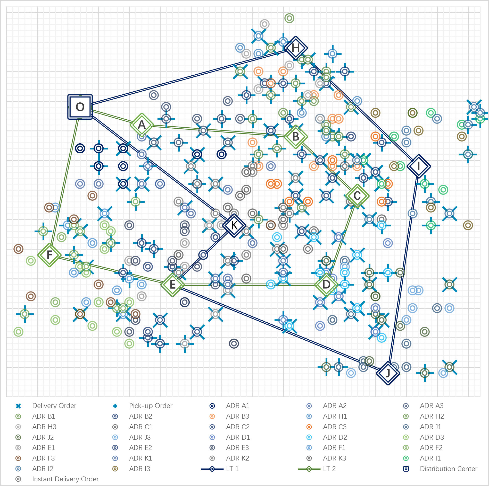
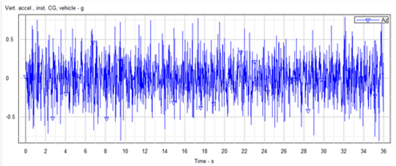
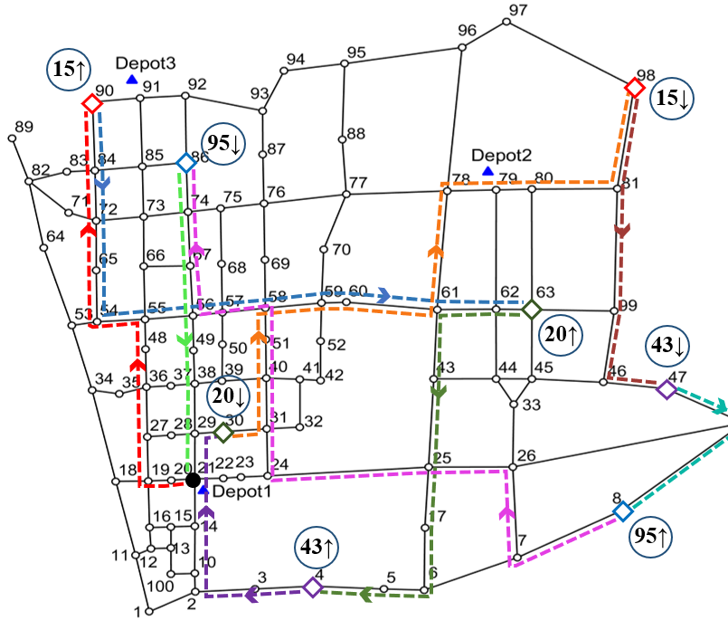
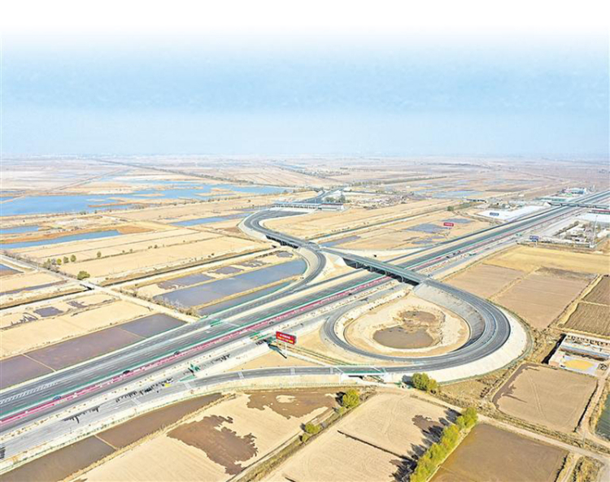

Hao Zheng
Recent M.S. Graduate, Tsinghua University
News
Education
-
Tsinghua University, School of Civil Engineering, Master of Science 09/2022 - 06/2025
-
Beijing Jiaotong University, School of Traffic and Transportation, Bachelor of Engineering 09/2018 - 06/2022
Publications
Published journal papers, conference papers, and book contributions.
Journal & Conference Papers

KNOWCAST: Domain-Knowledge-Integrated Deep Learning for Metro OD Forecasting and Path Flow Estimation
Accepted at Transportation Research Part C
Paper's Contribution: Proposed a domain-knowledge-integrated deep learning framework that embeds transportation planning models to forecast metro OD demand and infer path flows, improving mathematical consistency and predictive accuracy.
My Contribution: Led model development, coding, experimental validation, revision, and manuscript preparation.

Integrated Routing of Trucks and Robots for Multi-Modal Urban Express Logistics.
Presented at the TRB 105th Annual Meeting, 2026; revision under review for publication in Transportation Research Record
Paper's Contribution: Proposed LT-ADR, a multi-modal urban logistics system that jointly optimizes truck and robot routes for regular and instant express services.
My Contribution: Led model development, coding, experimental validation, and manuscript writing.

Vehicle Vibration Modeling via Road Profile Reconstruction and Simulation: Coupled Analysis of IRI, Speed, and Ride Comfort for Driving Assistance
Road Materials and Pavement Design, 2025

Improving Synchronization in High-Speed Railway and Air Intermodality: Integrated Train Timetable Rescheduling and Passenger Flow Forecasting.
IEEE Transactions on Intelligent Transportation Systems, 2022

Study on Customized Shuttle Transit Mode Responding to Spatiotemporal Inhomogeneous Demand in Super-Peak.
Information, 2021, 12:429
Paper's Contribution: Proposed a customized shuttle bus model to address super-peak travel demand, formulated as a PDPTWT and solved by a hybrid Tabu Search and ALNS algorithm.
My Contribution: Led model development, coding, experimental validation, and manuscript writing.

Dynamic Planning Model and Solution Algorithm for the Demand-responsive Customized Bus Route.
World Transport Convention (WTC) Proceedings, 2021
Paper's Contribution: Developed a two-stage planning model and solution algorithm for demand-responsive customized bus services.
My Contribution: Modified the core algorithm, implemented the solution in code, conducted case studies, and was the primary author of the manuscript.
Book

Green Development Paths and Strategies for Comprehensive Transportation in Ningxia
Book | ISBN: 9787114195624
Manuscripts in Progress
Current manuscripts under review or in active preparation.
Under Review

An Operational Scheduling Framework for Pavement Maintenance Activities: From Rule-Based Task Generation to Branch-and-Price-Based Route Optimization
Submitted to International Journal of Pavement Engineering
Paper's Contribution: Developed an integrated operational scheduling framework for pavement maintenance activities, linking rule-based task generation with branch-and-price-based route optimization. The method reconstructs maintenance tasks on road segments into an optimization-friendly topology and formulates the execution stage as a vehicle routing problem with time windows.
My Contribution: Led model development, coding, experimental validation, and manuscript writing.

STAGED TRANSFER LEARNING FOR LOCAL PAVEMENT CONDITION PREDICTION UNDER HETEROGENEOUS INDICATORS
Submitted to Journal of Transportation Engineering, Part B: Pavements
Paper's Contribution: Proposed a staged transfer learning framework for local pavement condition prediction under heterogeneous indicators. The method leverages external-data pre-training and progressive adaptation to local data under data scarcity and indicator mismatch.
My Contribution: Led model development, coding, experimental validation, and manuscript writing.
In Preparation

DISCERN: Discrete Choice with Embedded Representation Networks.
Target journal: Transportation Research Part C
Paper's Contribution: Proposed DISCERN, a framework that calibrates behavioral parameters of traditional discrete choice models using large-scale macroscopic data by embedding a theory-driven model within a deep learning architecture.
My Contribution: Led model development, coding, experimental validation, and manuscript writing.

A Bilevel Optimization Framework for Collaborative Strategies between Infrastructure and Mobility Service Providers.
Target journal: Transportation Research Part C
Paper's Contribution: Developed a bilevel optimization framework integrated with a GPU-based microscopic traffic simulator to model and solve strategic interactions between infrastructure providers and AV fleet operators.
My Contribution: Designed and implemented the end-to-end bilevel optimization framework; developed the Python upper-level loop and re-engineered the C++/CUDA lower-level simulator to integrate toll-responsive logic.
Professional Service
Associate Member, PIARC Technical Committee 1.1 04/2026 -- Present
World Road Association (PIARC)
- Appointed as a new Associate Member of PIARC TC 1.1 from China in April 2026.
- Participate in international committee activities on transport planning, administration, and the future development of transport agencies.
Contributor, PIARC TC 1.1 Working Group 1 Survey Report 04/2026 -- Present
Working Group 1: Envisioning the Transport Agency of the Future
- Contribute to survey analysis, evidence synthesis, and report drafting for the WG1 international survey report.
- Participate in discussions on response patterns across agencies and countries, including LMIC-related perspectives.
Theses
-
Master Thesis: A Comprehensive Full-Process Planning Model for Pavement Performance Forecasting and Maintenance Strategy Implementation under Missing Data Conditions. 06/2025
-
Undergraduate Thesis: Customized Bus Planning Method Responding to Spatiotemporal Concentrated Demand in Super-peak. 06/2022
Open Source Projects
Projects continually updated on github.com/scholarhaozheng.
-
Pave-ML-Multi-Task Learning for Pavement Performance Indicators (Python) Initial release: 2025
-
Pavement Maintenance Decision-Making and a VRP Model for Execution (Python) Initial release: 2025
-
Dynamic Short-Term Prediction of Urban Rail Origin-Destination Flow (Python) Initial release: 2024
-
Hybrid Route Planning of Same-Day and Regular Deliveries in Space-Time Networks (C#) Initial release: 2023
-
A Multi-Type Customized Shuttle Bus Route Planning Software (MATLAB) Initial release: 2021
Research Experience
Developing LPSim: A Bilevel Optimization Framework for Tolling Strategy in Autonomous Networks 06/2025 -- 10/2025
MIT-UF-NEU Summer Research Camp | Supervisor: Prof. Jinhua Zhao, Dr. Xuan Jiang
- Project: Leveraged and extended LPSim, a high-performance, GPU-accelerated traffic simulation framework, to understand cooperation patterns between AV companies and road infrastructure companies.
- Designed and implemented an end-to-end bi-level optimization framework to find optimal tolling strategies by modeling the interaction between infrastructure operators and autonomous vehicle fleets.
- Developed the upper-level model in Python to create an automated loop that executes the LPSim C++/CUDA simulator and iteratively updates tolling policies.
- Re-engineered the simulator's core logic for toll-responsive, cost-benefit analysis in agent lane-changing behavior, differentiating between AVs and HVs.
- Verified the framework's effectiveness while generating substantial revenue across various tested scenarios.


Digital Platform for Intelligent Road Asset Management (Code Writing: Prediction & Decision Models) 2023 -- 2025
Project: Research on Integration and Application of Intelligent Air-Ground Equipment in Digital Transportation Management
- Developed the core algorithms for a comprehensive digital road asset management platform, built on a SpringBoot + VUE framework.
- Designed and implemented the road performance prediction module, creating a deep learning model using GRU and Attention mechanisms that incorporates climate, traffic, and material data. Trained the model on the LTPP dataset.
- Built the maintenance optimization module, which uses a mathematical model under dual budget and performance constraints to generate optimal, fine-grained maintenance strategies.
Strategic Framework for Green Transportation & Infrastructure Management (Researcher & Contributing Author) 2022 -- 2024
Project: Coordinating Ecological Protection with Carbon Peaking and Neutrality Goals in the Yellow River Basin | Supervisor: Prof. Runhua Guo
- Researched and formulated technical roadmaps for the resource utilization of solid waste in highway construction, focusing on recycled asphalt and industrial by-products.
- Analyzed infrastructure lifecycle management strategies, including intelligent inspection methods, pavement performance prediction, and maintenance decision-making models.
- Under the primary guidance of Prof. Guo, authored two key chapters (Chapter 3: Green Construction; Chapter 4: Green Operations & Maintenance) of the project's resulting book, published by the China Communications Press.
Comparative Analysis of Road Design Standards for Belt and Road Projects (Research Analyst) 2023
Project: Differentiated Research on Engineering Projects along the Belt and Road: Sri Lanka | Supervisor: Prof. Runhua Guo
- Conducted a comparative analysis of highway design standards between China and key Belt and Road countries (e.g., Sri Lanka, Pakistan) to provide technical guidance for international projects.
- Conducted a comparative analysis of the standards for highway construction and acceptance between China and Sri Lanka, with a focus on asphalt pavement design philosophies, to formulate conversion methods and investigate universal acceptance criteria.
- Authored a technical report identifying critical differences in design parameters (e.g., standard axle loads, material specifications, reliability levels) to facilitate the adaptation of Chinese engineering practices abroad.
Optimizing Air-Rail Intermodal Transport: A Case Study of Daxing Airport (Project Leader) 2020 -- 2022
National University Student Innovation & Entrepreneurship Development Program | Supervisor: Prof. Yuyan Tan
- Led a student team to design a two-stage optimization framework aimed at improving the end-to-end efficiency of air-rail passenger transfers.
- Formulated a multi-objective optimization model to adjust high-speed rail timetables, maximizing flight connection opportunities while minimizing schedule disruptions.
- Designed a Customized Bus routing solution for the airport-station connection, modeling it as a VRPTWTS and developing a hybrid Adaptive Large Neighborhood Search and Tabu Search (ALNS-TS) algorithm to solve it.
- Implemented the solution as the Multi-Type Customized Shuttle Bus Route Planning Software, for which I was granted a national software copyright as the sole holder (Reg. No. 2021SR1289113).
- The project received a national-level award upon completion, and the research was accepted for publication in the World Transport Convention (WTC) proceedings.